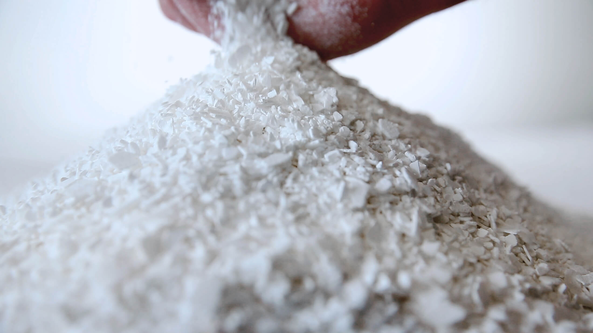

Calcium Chloride Overview
Calcium Chloride is a versatile industrial salt used in de-icing, dust control, water treatment, food processing, and drilling applications. It is valued for being highly soluble, strongly hygroscopic, and effective at attracting moisture, which makes it useful in both commercial and industrial operations.
What It Is
Calcium chloride is an inorganic compound with the chemical formula CaCl2. It is typically a white crystalline solid that dissolves easily in water and naturally absorbs moisture from the air, which is why it is widely used as a drying agent and desiccant. Because it is deliquescent, solid calcium chloride can absorb enough moisture to turn into brine, and when dissolved, it releases heat. Those properties make it especially effective in applications where rapid moisture control or freezing-point depression is needed.
Main Benefits
One of the main benefits of calcium chloride is its strong performance in ice melting and dust suppression. It works faster than ordinary salt in many de-icing situations because it attracts moisture quickly and generates heat as it dissolves. It is also useful in manufacturing and process industries because of its high solubility and ability to control moisture or add calcium hardness where needed. In food and beverage applications, it can act as a firming agent and electrolyte, while in construction it can help accelerate concrete setting.
Typical Applications
Calcium chloride is commonly used for road de-icing, dust control on unpaved roads, and winter road maintenance. It is also widely used in water treatment, where it helps adjust hardness and support chemical balance. In food processing, calcium chloride is used as a firming agent in products such as cheese, pickles, canned vegetables, tofu, and some sports drinks. It is also used in concrete, oilfield operations, drying systems, and certain industrial chemical processes.
Why Choose It
Calcium Chloride is a practical choice for buyers who need a dependable material that performs across multiple industries. Its combination of moisture absorption, freeze-point depression, and process stability makes it one of the most useful salts in industrial supply chains. While our core expertise is bitumen, we also source and supply related commodities like Calcium Chloride for verified buyers.
